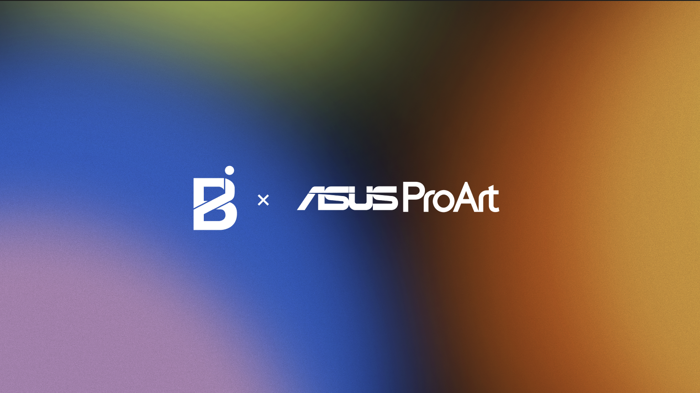

ASUS ProArt, 2026
Exploring Productive Friction in AI-Assisted Creative Workflows
Problem Space
As AI agents automate more of the creative process, how do we preserve the challenges that help creators develop their judgment and skills?
While AI can reduce repetitive work and streamline creative workflows, certain forms of friction are essential for learning, critical thinking, and creative decision-making. Our project explores where this distinction lies.
How Might We
How might we keep the productive friction that builds a creator's judgment, when the whole point of an AI agent is to take friction away?
Project Goals
- Understand how creators navigate their workflows, make decisions, and develop their skills.
- Distinguish productive friction from unnecessary obstacles in the creative process.
- Explore how AI influences creative autonomy, critical thinking, and decision-making.
- Identify opportunities for AI to support creators without replacing meaningful human involvement.
Project Status